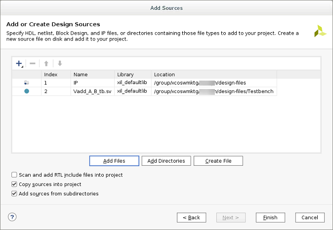
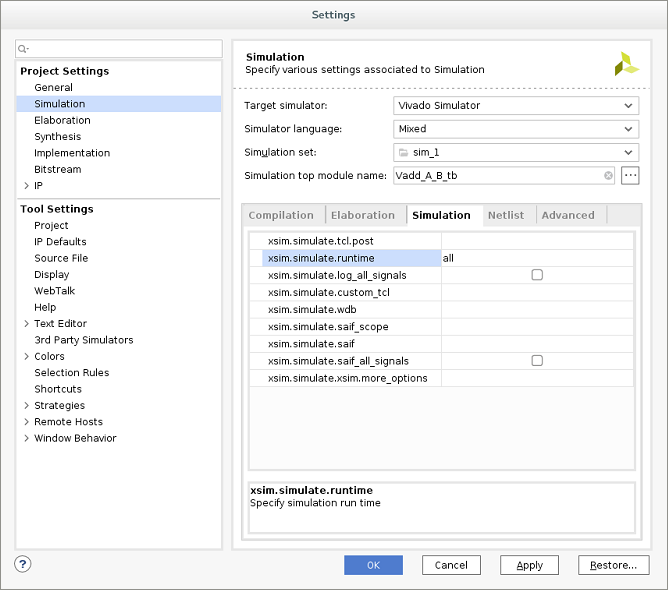
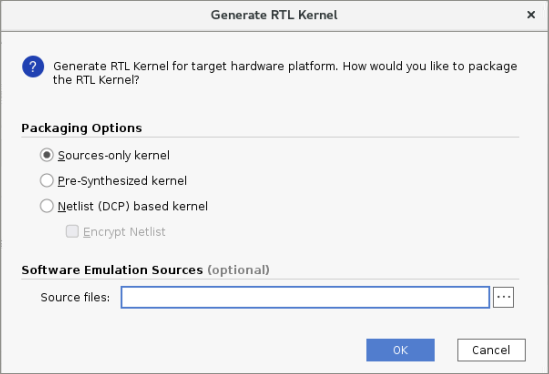

2020.1 Vitis™ Application Acceleration Development Flow TutorialsSee 2019.2 Vitis Application Acceleration Development Flow Tutorials |
Vivado Design Suite — RTL Design¶
When the Vivado Design Suite IDE opens, the Sources window displays the source files automatically generated by the RTL Kernel Wizard. These are placeholder files to show yo u the structure of RTL files needed for creating an RTL Kernel. You can use these example files to help build your own RTL modules, or replace these files with an existing design.
Remove the Example Files¶
Before adding your design files to the project, you need to remove the example files generated by the RTL Kernel Wizard.
In the Vivado Design Suite IDE, in the Sources window, select Compile Order > Synthesis, and then expand the Design Sources tree.
Select all eight source files, right-click, and then select Remove File from Project….
In the displayed Remove Sources dialog box, to remove the files from the project, click OK.
The Invalid Top Module dialog box opens.
Click OK to continue.
In the same window, change the sources to simulation and delete only the
Vadd_A_B_tb.svfile.Repeat steps 3 and 4.
Add Your RTL Sources to the Project¶
IMPORTANT: After removing the automatically generated RTL files from the RTL kernel project, you are ready to add your own RTL IP files back into the project. The RTL IP files have been provided for you in this tutorial, but this is the point at which you would insert your own RTL IP and the supporting file hierarchy.
Right-click Design Sources, and then click Add Sources. The Add Sources window is displayed.
Click Add or create design sources, and then click Next.
Click Add Directories, browse to
reference-files, select thesrcdirectory and then select theIPdirectory (which contains the RTL sources).NOTE: To add your own RTL IP, specify the required folder or files.
Click Add Files, browse to
testbench, and then select Vadd_A_B_tb.sv:
To add the files to the current project, click Finish.
To view the hierarchy of the project, in the Sources window, select the Hierarchy tab.
IMPORTANT: The test bench is selected as the top-level design file. While this is technically correct because the test bench includes the IP; in this case the test bench should not be the top-level of the RTL kernel.
Right-click Vadd_A_B_tb.sv, and then select Move to Simulation Sources.
This defines the test bench for use in simulation and enables the Vivado Design Suite to identify the
Vadd_A_B.vfile as the new top level of the design. This RTL IP has an interface which is compatible with the requirements for RTL kernels in the Vitis core development kit. This can be seen in the moduleVadd_A_Bdefinition, as shown in the following code.module Vadd_A_B #( parameter integer C_S_AXI_CONTROL_ADDR_WIDTH = 12 , parameter integer C_S_AXI_CONTROL_DATA_WIDTH = 32 , parameter integer C_M00_AXI_ADDR_WIDTH = 64 , parameter integer C_M00_AXI_DATA_WIDTH = 512, parameter integer C_M01_AXI_ADDR_WIDTH = 64 , parameter integer C_M01_AXI_DATA_WIDTH = 512 ) ( input wire ap_clk , output wire m00_axi_awvalid , input wire m00_axi_awready , output wire [C_M00_AXI_ADDR_WIDTH-1:0] m00_axi_awaddr , output wire [8-1:0] m00_axi_awlen , output wire m00_axi_wvalid , input wire m00_axi_wready , output wire [C_M00_AXI_DATA_WIDTH-1:0] m00_axi_wdata , output wire [C_M00_AXI_DATA_WIDTH/8-1:0] m00_axi_wstrb , output wire m00_axi_wlast , input wire m00_axi_bvalid , output wire m00_axi_bready , output wire m00_axi_arvalid , input wire m00_axi_arready , output wire [C_M00_AXI_ADDR_WIDTH-1:0] m00_axi_araddr , output wire [8-1:0] m00_axi_arlen , input wire m00_axi_rvalid , output wire m00_axi_rready , input wire [C_M00_AXI_DATA_WIDTH-1:0] m00_axi_rdata , input wire m00_axi_rlast , // AXI4 master interface m01_axi output wire m01_axi_awvalid , input wire m01_axi_awready , output wire [C_M01_AXI_ADDR_WIDTH-1:0] m01_axi_awaddr , output wire [8-1:0] m01_axi_awlen , output wire m01_axi_wvalid , input wire m01_axi_wready , output wire [C_M01_AXI_DATA_WIDTH-1:0] m01_axi_wdata , output wire [C_M01_AXI_DATA_WIDTH/8-1:0] m01_axi_wstrb , output wire m01_axi_wlast , input wire m01_axi_bvalid , output wire m01_axi_bready , output wire m01_axi_arvalid , input wire m01_axi_arready , output wire [C_M01_AXI_ADDR_WIDTH-1:0] m01_axi_araddr , output wire [8-1:0] m01_axi_arlen , input wire m01_axi_rvalid , output wire m01_axi_rready , input wire [C_M01_AXI_DATA_WIDTH-1:0] m01_axi_rdata , input wire m01_axi_rlast , // AXI4-Lite slave interface input wire s_axi_control_awvalid, output wire s_axi_control_awready, input wire [C_S_AXI_CONTROL_ADDR_WIDTH-1:0] s_axi_control_awaddr , input wire s_axi_control_wvalid , output wire s_axi_control_wready , input wire [C_S_AXI_CONTROL_DATA_WIDTH-1:0] s_axi_control_wdata , input wire [C_S_AXI_CONTROL_DATA_WIDTH/8-1:0] s_axi_control_wstrb , input wire s_axi_control_arvalid, output wire s_axi_control_arready, input wire [C_S_AXI_CONTROL_ADDR_WIDTH-1:0] s_axi_control_araddr , output wire s_axi_control_rvalid , input wire s_axi_control_rready , output wire [C_S_AXI_CONTROL_DATA_WIDTH-1:0] s_axi_control_rdata , output wire [2-1:0] s_axi_control_rresp , output wire s_axi_control_bvalid , input wire s_axi_control_bready , output wire [2-1:0] s_axi_control_bresp , output wire interrupt )
The XML file and the RTL sources can now be used to package the kernel into an XO file.
RTL Verification¶
Before packaging an RTL design as a kernel XO file, ensure that it is fully verified using standard RTL verification techniques, such as verification IP, randomization, and/or protocol checkers.
In this tutorial, the RTL code for the Vector-Accumulate kernel has already been independently verified.
If you want to skip this step and begin packaging the RTL kernel IP, go to the next section.
NOTE: The AXI Verification IP (AXI VIP) is available in the Vivado IP catalog to help with verification of AXI interfaces. The test bench included with this tutorial incorporates this AXI VIP.
To use this test bench for verifying the Vector addition kernel:
In the Flow Navigator, right-click Run Simulation, and then select Simulation Settings.
In the Settings dialog box, select Simulation.
Change the xsim.simulate.runtime value to
allas shown in the following figure.
Click OK.
In the Flow Navigator, click Run Simulation, and then select Run Behavioral Simulation.
The Vivado simulator runs the test bench to completion, and then displays messages in the Tcl Console window. Ignore any error messages.
Test Completed Successfullyconfirms that the verification of the kernel is successful.NOTE: You might need to scroll up in the Tcl Console to see the confirmation message.
Package the RTL Kernel IP¶
The Vivado Design Suite project is now ready to package as a kernel XO file for use with the Vitis IDE.
From the Flow Navigator, click Generate RTL Kernel. The Generate RTL Kernel dialog box is opened, as shown in the following figure.

Packaging Option Details
Sources-only kernel: Packages the kernel using the RTL design sources directly.
Pre-synthesized kernel: Packages the kernel with the RTL design sources, and a synthesized cached output that can be used later in the linking flow to avoid re-synthesizing the kernel and improve runtime.
Netlist (DCP) based kernel: Packages the kernel as a block box, using the netlist generated by the synthesized output of the kernel. This output can be optionally encrypted to provide to third-parties while protecting your IP.
Software Emulation Sources (Optional): Packages the RTL kernel with a software model that can be used in software emulation. In this tutorial, a software model is not used; leave this option empty.
For this tutorial, select Sources-only.
Click OK.
The Vivado tool uses the followingpackage_xocommand to generate an XO file.package_xo -xo_path Vadd_A_B.xo -kernel_name Vadd_A_B -kernel_xml kernel.xml -ip_directory ./ip/
You can examine the Tcl Console for a transcript of the process.
When prompted, exit the Vivado Design Suite.
The Vivado tool closes and returns control to the Vitis IDE. The RTL kernel is imported into the open Vitis IDE project, which opens the Kernel Wizard dialog box.
Click OK.
Next Steps¶
Now you have created an RTL Kernel (.xo) file from a Vivado IP, you can test the RTL Kernel in a Vitis Application.
Return to Main Page — Return to Start of Tutorial
Copyright© 2020 Xilinx